Within this homework, our main goal was to build a ray tracer, such that we could render physical realistic images.
We began by first implementing ray generation and intersection for those corresponding rays, which we further built up on by implementing a BVH to help speed up ray tracing.
After that, we explored different ways to directly illuminate a scene, uniform and importance sampling and we built up upon that by adding in indirect illumination in a further part.
We added in indirect illumination through recursive path tracing, where we sampled a new direction from the surface’s BSDF and recursively traced rays to estimate light arriving after bouncing off other surfaces.
We also added in Russian Roulette to help speed up our ray-tracing as it allowed us to terminate particular rays early.
Finally, we added in adaptive sampling, allowing our path tracer to allocation computation where it is needed as opposed to uniformally.
Throughout this project, we learned how to generate and render physically realistic lighting and became not only more familiar with image rendering but appreciated how our computers generate images quickly and efficiently.
I also want to mention, in Task 3 we used chatgpt to help us debug through the code. We encountered an error where our code would cause an unusually long time to render on both the instructional machines and on our local computers, as a result we queried with chatgpt to perform rubber ducky debugging and help identify where potential slowness could be arising from. A specific example of usage in this case is when the rendering with BVH took longer than running without BVH, and this was on files that already took around 300 seconds to render. We were able to identify that the slowness was due to the BVH construction and that we could optimise the BVH construction by using a midpoint split when the heuristic split was not effective. This helped us reduce the time it took to render the files and allowed us to render more complex files.
Part 1: Ray Generation and Scene Intersection
Within part 1, our main task was to implement camera ray creation and their corresponding intersection.
These worked as the foundations for ray tracing that we end up expanding on in the future.
We generated camera rays by mapping pixels to a virtual sensor, transforming it into world space and lastly normalising their directions..
For intersections, we both ray-triangle intersections and then ray-sphere intersections.
We can determine if a ray intersects with a sphere by solving a quadratic equation, however for a ray triangle intersection we need to use the Möller–Trumbore algorithm.
The Möller–Trumbore algorithm works through checking barycentric coordinates of the intersection point and that the ray is on one side of the triangle, the ray is inside the triangle and the ray is on the other side of the triangle.
Below we have included some images with normal shading.
More technically, we followed the spec and lecture slides to generate a ray in the right direction, we find the tan(hFov) and tan(vFov) in the image plane, which correlates to the x and y maxes, to interpolate the coordinates at the given XYZ coordinates. The z coordinate is always -1 as per our slides. With all of this data, we can now calculate the direction of the ray since we know its origin of the way is the same as the coords.
Next, we also needd to normalize the direction of the way since it helps us tell if there is a intersection and if its valid in the ray or the object, and this is done by getting the minimum of t in nClip and the max of t is fClip.
Now, we can find the generated ray in by converting from camera to world coordinates by diong simple math in the c2w matrix. We did use the Moller Trumbore algorithmn and this is done by using the formula in the lectuire slides of O+tD=(1-b1-b2)*p0+b1*p1+b2*p2. The Ps are the 3 vertexes of the triangle and the Bs are the variables that we are trying to calculate. Then use a couple of known equations like E1=P1-P0 and E2=P2-PO and S=O-PO, and S1=Cross(D,E2), and S2=Cross(S,E1), and once we solve this, then we check if t is in the range of the minmax that we got for t above. Another thing we check if the ray for b1b2 is greater than 0, the sum is < 1 and t is bigger than 0, then it is a validi intersection in the triangle if it is.
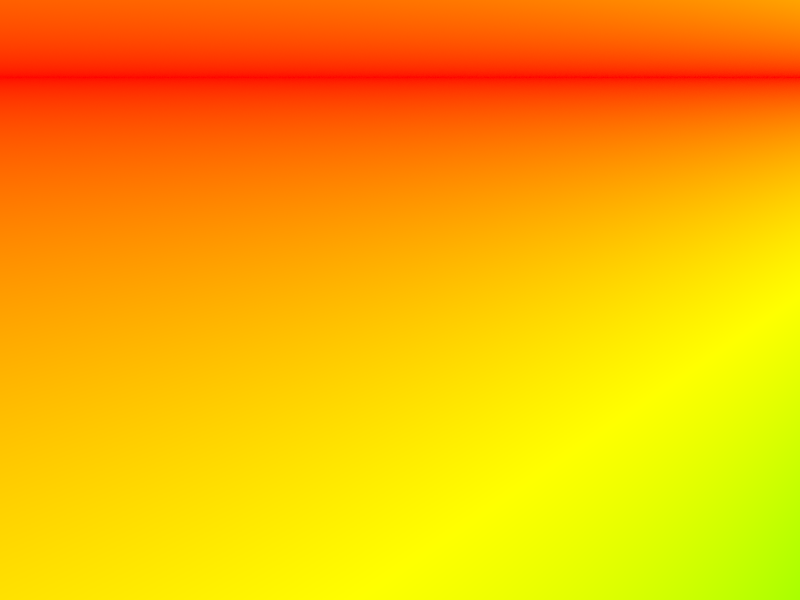
Image with normal shading.
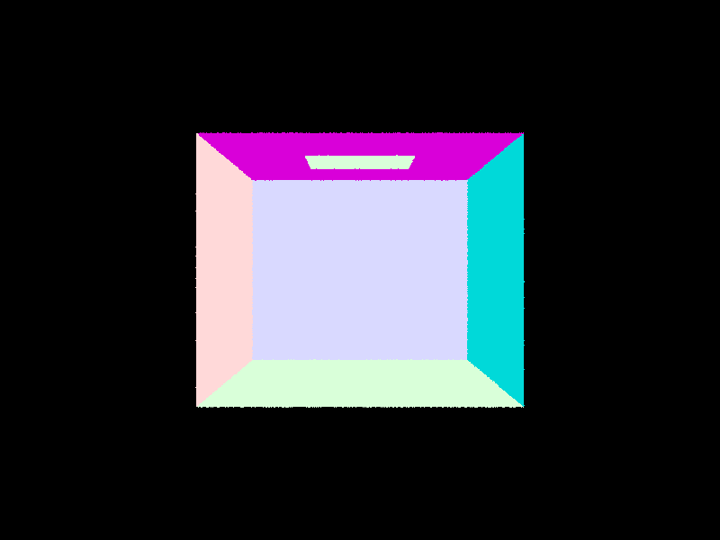
Image with Ray-Triangle Intersection.
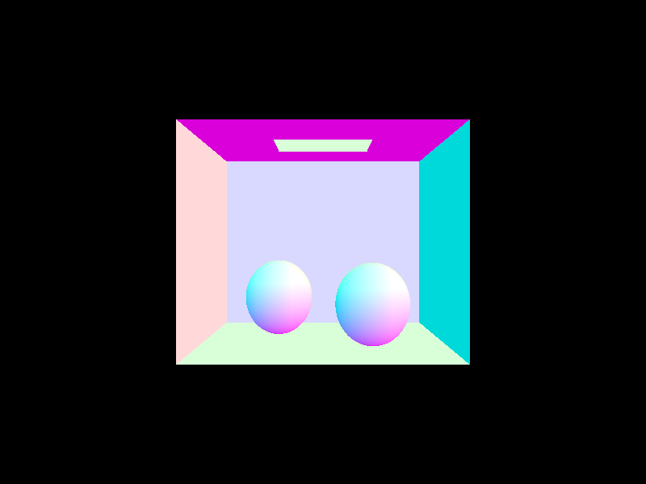
Image with Ray-Sphere Intersection
Part 2: Bounding Volume Hierarchy
In order to optimise our ray intersections, we chose to implement a bounding volume hierarchy, or BVH as we will refer to it in the rest of this paragraph.
BVH's are a spatial acceleration structure that works to reduce the number of ray intersections we need to check.
We constructed the BVH by recusrively partitioning and splitting our primitives into left and right child nodes dependent on their spatial distribution.
We used a heuristic to split the primitives into left and right child nodes, which was the surface area of the bounding box of the primitives and we parititioned our primitives based on the median position on that axis.
If our primitives fall on one side of the split, we defaulted to a midpoint split to prevent degenerate trees, resulting in us having a balanced BVH tree.
More technically, we first looped through all primitives and then added them to bounding box, and then their centroid was calculated in another bounding box for splitting. We checked if the number in the bounding box is bigger than the size we allowed, then we split in half! We then chose how to split along the midpoint as per the spec to seperate them into right and left vectors in their centroid, then we also recusrively called this function to continue and loop through all of the prims.
Using our accelation, we were able to render large .dae files without a lot of computation power. Below are images of complex .dae files rendered with our BVH.
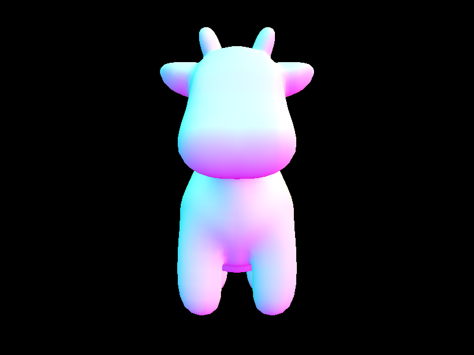
Cow with BVH acceleration
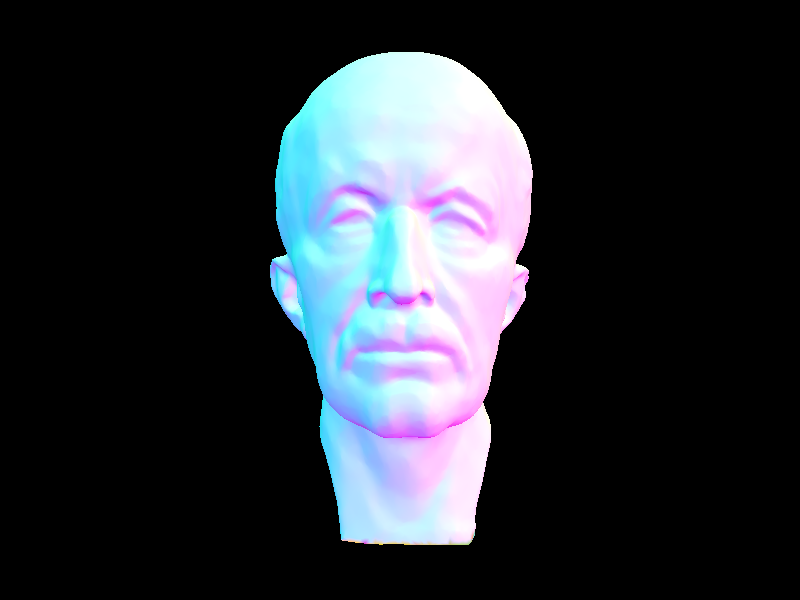
Maxplank with BVH acceleration
We timed our rendering with and without BVH in order to understand the impact. Without BVH, our rendering scaled linearly by the number of primitives, making it much slower as the complexity increased.
Using BVH, we were able to reduce the overall time complexity that it took.
For example, before bvh, the cow took around 55 seconds to render on my laptop, then it reduced to around 30 with my BVH acceleration, and like the staff solution, I was able to render the image in around 10 seconds, which is a considerable decrease in time. For the maxplank head, it took around 300 seconds to render without any BVH, and then this took aruond 20 seconds to render. Both was rendered very quickly because of how we reduced the number of triangles in each mesh, by decreasing the # of intersections of the rays and objects with BVH, and only checking when the ray intersects the bounding box to eliminate redundant checks.
Part 3: Direct Illumination
Within part 3, we focused on direct illumination, more specifically we focused on uniform hemisphere sampling for illumination and importance sampling.
Both of these sampling methods are used to reduce compute time by estimating how much light reaches the camera from many different directions.
Uniform hemisphere sampling samples random directions in the hemisphere of the camera and checks if the direction leads to a light source.
Uniform hemisphere is pretty inefficient as there are often a lot of sampling directions that contribute little / no light, so we have a lot of noise and a slower rendering speed
Importance sampling is a step up from uniform hemisphere sampling as it samples directions based on the relative importance of each direction.
Essentially, we sample directions that we know point towards a given light source, and so by focusing on these directions we can reduce noise and improve soft shadows.
To analyze the effect of light sampling on noise in soft shadows, we rendered a scene with an area light using importance sampling, setting the samples per pixel to 1 (-s 1) and varying the number of light rays using the -l flag. Specifically, we rendered the scene with -l 1, -l 4, -l 16, and -l 64, keeping all other settings constant. This allowed us to isolate the impact of the number of light rays on noise levels, all as per the spec.. More technically, in hemisphere sampling if the sample ray is intersecting with a light, then we calculate the radiance from the light source. If not, then we skip it. Then we normalize the sample by multiplying with 2 8 pi and we divide by how many samples. In importance sampling,
which is kind of a fix for hemisphere sampling of if it doesn't intersect with a light source, then there is no way we can create a picture with good quality. This method allows us to iterate over all light sources then sample a ray from the light source in the object, instead of doing it randomly sampling the ray. We have to check if the ray doesn't intersect anything because we don't want light going through the object. Finally, we take the bsdf in the object then multiuply it by radidance from light and with the cosine theta of the radiance, normalize it in the PDF sample distribution.
We have rendered images below with using both of the sampling methods, and as you can see there is a significant difference in the how the sampling methods render.
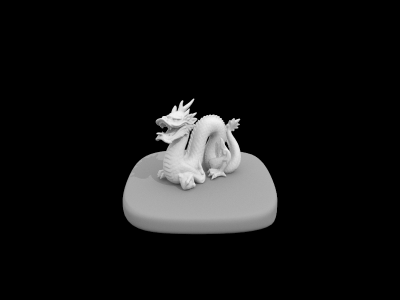
Importance sample 64 / pixel, 32/pight
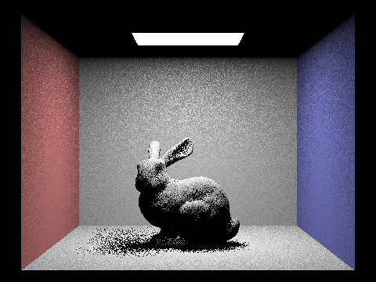
Importance sampling 1/pixel,1/pight
Importance sampling 1/pixel,4/pight
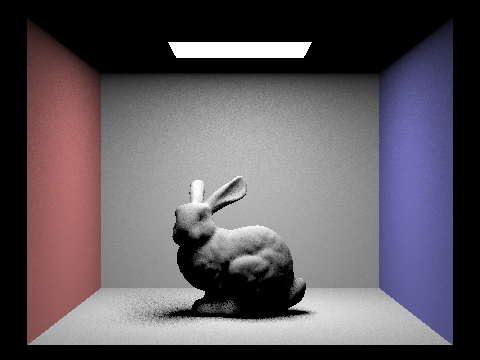
Importance sampling 1/pixel,16/pight
Importance sampling 1/pixel,64/pight
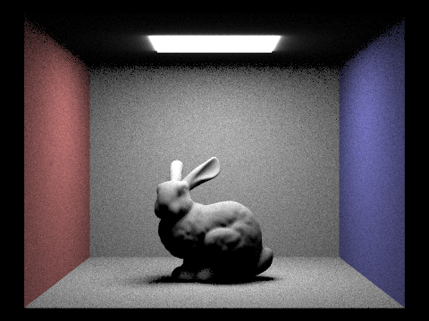
Hemisphere sampling 64/pixel, 32/pight
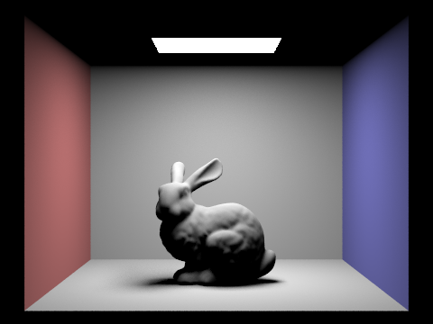
Importance sampling 64/pixel, 32/pight
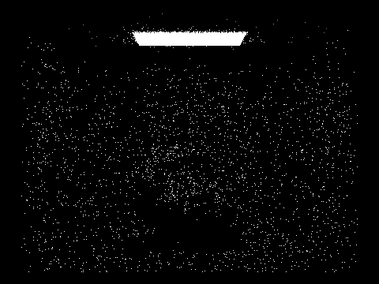
Hemisphere Sampling 1 / pixel, 1/pight
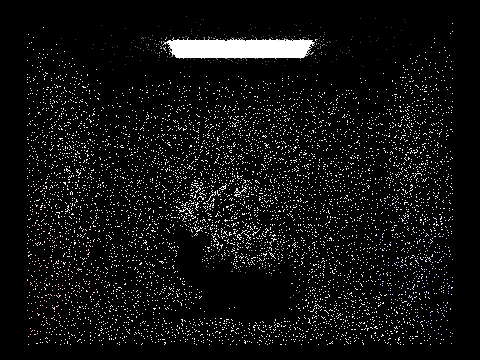
Hemisphere Sampling 1 / pixel, 4/pight
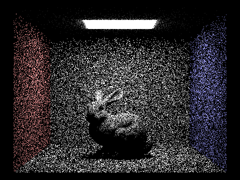
Hemisphere Sampling 1 / pixel, 16/pight
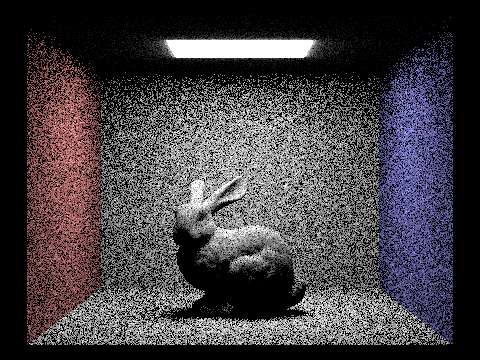
Hemisphere Sampling 1 / pixel, 64/pight
The bottom four pictures are for us to a look at the increasing sampling for light, the noise will lower alot even if sample / pixel is 1.
As you can see, uniform hemisphere sampling contains a significant amount of noise as most sampled directions are not pointing towards a light source.
However, importance sampling is able to reduce the noise and improve the quality of the image as well as quicken the rendering time. We also can see that if the light source in importance sampling is a point light source, then we caan reduce the sample to 1 and when getting radiance, we also have to consider that this is sampled radiance from PDF probability from light source, meaning that we will need to divide it by PDF for normalization.
Therefore, with the same number of samples, you can see that important sampling produces clearer shadows and a more accurate illumination overall, making it the better method for lighting estimations. This is because hemisphere sampling may miss the light source and makes it black when there should be light, which makes noise. This is difference in importance sampling because we are saampling in the light source direction.
Part 4: Global Illumination
In Part 4, we implemented indirect lighting using recursive path tracing in at_least_one_bounce_radiance. After computing direct illumination, we sampled a new direction from the surface’s BSDF and recursively traced rays to estimate light arriving after bouncing off other surfaces. This captured indirect effects like color bleeding and soft illumination in corners. We visualized full global illumination using 1024 samples per pixel, showing significantly more realistic lighting than direct-only rendering. To isolate indirect lighting, we temporarily disabled direct light and observed that indirect lighting alone captures subtle ambient effects, especially in occluded regions. For CBbunny.dae, we rendered only the m-th bounce of light using different max_ray_depth values, AcumBounces=false. The second bounce introduces soft indirect fill light, while the third bounce propagates light further into shadowed regions, improving realism compared to rasterization. We also compared accumulated vs. unaccumulated bounces; accumulated renders became brighter and more complete as the number of bounces increased, while unaccumulated renders isolated how each bounce contributes. We rendered CBbunny.dae using Russian Roulette with depths from 0 to 100. Light paths contribute diminishing amounts at higher depths, but subtle effects like soft shadows and interreflections become richer. Finally, using four light rays, we rendered a scene with varying sample-per-pixel counts (1, 2, 4, 8, 16, 64, and 1024). As expected, noise decreased substantially with higher samples, and shadows, reflections, and illumination converged to physically accurate results.
Hemisphere Sampling 1 / pixel, 16/pight
Hemisphere Sampling 1 / pixel, 64/pight
Hemisphere Sampling 1 / pixel, 16/pight
Hemisphere Sampling 1 / pixel, 64/pight
Hemisphere Sampling 1 / pixel, 16/pight
Hemisphere Sampling 1 / pixel, 64/pight
Hemisphere Sampling 1 / pixel, 16/pight
Hemisphere Sampling 1 / pixel, 64/pight
Hemisphere Sampling 1 / pixel, 16/pight
Hemisphere Sampling 1 / pixel, 64/pight
Hemisphere Sampling 1 / pixel, 16/pight
Hemisphere Sampling 1 / pixel, 64/pight
Hemisphere Sampling 1 / pixel, 16/pight
Hemisphere Sampling 1 / pixel, 64/pight
Hemisphere Sampling 1 / pixel, 16/pight
Hemisphere Sampling 1 / pixel, 64/pight
Hemisphere Sampling 1 / pixel, 16/pight
Hemisphere Sampling 1 / pixel, 64/pight
testtest
Part 5: Adaptive Sampling
In Part 5, we implemented adaptive sampling to reduce unnecessary computation while maintaining image quality. Instead of taking a fixed number of samples per pixel, we estimate the mean and variance of the pixel’s luminance as sampling progresses. After every batch of samples (controlled by samplesPerBatch), we check whether the confidence interval around the estimated mean is within a user-defined threshold (maxTolerance). If it is, sampling stops early for that pixel; if not, sampling continues until either the pixel converges or we reach the max allowed samples.
In our implementation within raytrace_pixel, we compute the illumination for each sample and accumulate both the sum and sum of squares. Once the number of samples in a pixel reaches multiple samplesPerBatch, we calculate the standard deviation and use the 1.96× standard error bound to construct a 95% confidence interval. If this interval is small enough relative to the mean (as defined by maxTolerance), we stop sampling and finalize the pixel value. This allows the renderer to spend more samples in noisy regions like soft shadows or caustics and fewer in smoother areas like large flat surfaces.
To test this, we rendered two scenes with 2048 max samples per pixel, using one light sample and a max ray depth of 5. In the sample rate visualizations, brighter pixels received more samples due to higher noise, while darker pixels required fewer. The final rendered results were visually indistinguishable from uniformly sampled renders but required significantly less computation overall.
Visualization of 2048 sample bunny of depth 5 and 1 sample per light